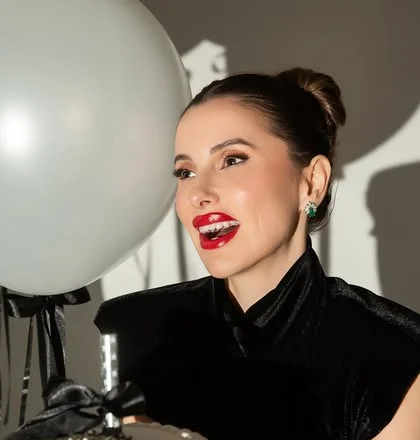
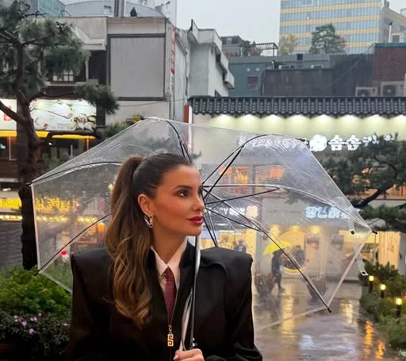

Jaqueline Guimarães
Agendar avaliação- CapaHarmonização facial
Avaliação individual do rosto, pelo WhatsApp.
- FormaçãoTrês certificações internacionais
Bandeiras da Espanha e da Coreia do Sul, conforme a bio.

- Agendar avaliação
- BastidoresDe Seul ao consultório
Os destaques do perfil registram as viagens.
- AgendaAvaliação pelo WhatsApp
Conte o que deseja e peça um horário.
pág. 02
Nesta edição
pág. 03 · A carta
Embelezar e rejuvenescer você é meu propósito.
A carta da Dra.
A Dra. Jaqueline Guimarães é biomédica e atende em Tubarão (SC), com foco em harmonização facial. (Texto de exemplo, a validar com a Dra.)
No Instagram (16,2 mil seguidores em 20/10/2026), ela publica bastidores, viagens e conteúdo sobre cuidados com o rosto. A página reúne isso em um só lugar: conhecer, perguntar e agendar.
Dra. Jaqueline Guimarães
Biomédica · CRBM 012344 (perfil, a confirmar)
pág. 04 · Passaporte
Passaporte de formação
A bio da Dra. cita três certificações internacionais e mostra as bandeiras da Espanha e da Coreia do Sul (duas vezes). Os carimbos ao lado são ilustração; instituição, curso, ano e a distribuição por país entram quando a Dra. confirmar os certificados.
Os destaques do perfil também têm os nomes Paris, Madrid, Miami e Orlando.
Países conforme as bandeiras da bio · detalhes a confirmar
- Seul · palácio

Seul · dia de chuva- Seul · noite no rio
pág. 05 · Resultados
Resultados e feedbacks, no perfil.
Os destaques Resultados e Feedback ficam no Instagram da Dra. Esta prévia não reproduz casos de pacientes; a página final só usará imagens com termo de autorização e dentro das regras do conselho (CRBM).
Ver no Instagram ↗pág. 06 · Entrevista
Suas dúvidas, sem rodeios.
Perguntas e respostas de exemplo, para validar com a Dra.
- P.Como é a primeira avaliação?
- R.Você conta o que deseja mudar e o que quer manter. A Dra. observa o rosto como um todo e explica as possibilidades, inclusive esperar.
- P.Preciso chegar sabendo o procedimento?
- R.Não. Você chega com a queixa; o caminho é desenhado na conversa.
- P.O resultado fica natural?
- R.Naturalidade é critério de planejamento, não promessa. A Dra. alinha as expectativas antes de qualquer decisão.
- P.Quanto custa?
- R.Os valores dependem do plano de cada pessoa e são apresentados depois da avaliação.
- P.Onde fica o consultório?
- R.Em Tubarão, SC. O endereço completo será confirmado antes de a página ser publicada.
pág. 07 · Contracapa
Sua avaliação começa aqui.
Mande uma mensagem pelo WhatsApp para pedir um horário de avaliação.
Agendar pelo WhatsAppTubarão, SC · endereço e horários a confirmar